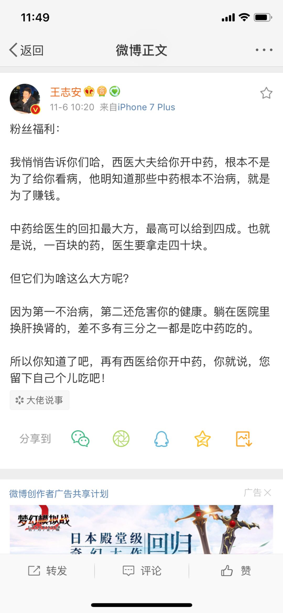

昨天的文章，我只是简单的提了「中医」俩字，没想到后台一大堆骂我的，哈，我已经记不清多久没见过如此现象了，但是我这人，有点理想主义，我见得了别人坏，但是见不了别人蠢，尤其是见不了年轻人蠢，因为年轻人是国家的未来，他们如果很蠢，那未来一定很糟，所以，我今天决定给大家写一篇科普。
但是这篇科普依然会引起很大争议，甚至文章可能还会被处理，所以请只字不差的阅读完后，可以保存、可以转发给身边的人看，但能说服多少人就不知道了，但是哪怕能说服一个人，能让一个人有所改观，我这篇文章就是有意义的。
1. 很多人其实在喷之前根本都没搞清楚中医、西医的概念，我们现在所说的中医，就是指，注意不是泛指，而就是指中国古代传统医学，西医，就是指西方现代科学医学，这个前提大家必须搞清楚。
有相当一大部分人，一听中医是中国的，西医是外国的，那脆弱的民族自尊心就来了，但其实西医是起源于欧美，现在已经是全人类共同参与的大事了，全球的各个国家，包括中国都在为西医的进步做贡献，这是很多人不知道的。
2. 中医其实本质上是一门经验学科，啥意思呢？就是古代限于技术的限制，看病大多是凭借经验。我举个例子，古代中医看病，发现某个草药能治某种病，然后可以配合一些案例，通过不断的观察，总结出经验，说这个草药就能治这个病，于是记录下来，流传后人，但是你要问他什么原理，他说不出来。
而西医讲究科学，啥是科学？就是你高中学的那些生物、化学，精确到细胞、分子领域来研究，通过种种实验，如果发现某种草药能治某种病，西医的范畴是是因为这种草药含有某种元素，这种元素对这个病有用，然后通过科学的方法，把这种元素提取出来做成药片，这就是西医的大概流程。
3. 做个类比就是，如果你们家电视屏突然花了，中医的手段就是，我拍下突然好了，于是断定拍打电视对花屏幕有用。而西医的手段是要了解电视屏为什么花，会把电视拆了，最后发现是因为某根线子接触不良，然后修好。
如果要拿程序举例就是，你发现一个 bug，改个某个参数，这 bug 修复了，但是你也搞不懂为什么，反正修复了就完事了，这就是中医。但是如果你懂底层原理，一定要找到具体原因，最后终于修复了，那这就是西医。
4. 前面说到中药和西药，如果通过观察发现某种草药能治某种病，就认定这种草药是治这种病的良药，你们觉得靠谱么？想想就不严谨，因为这种草药可能含有上百种元素，其中的某一种元素可能对这个病有效，但是其他的几十上百种元素是不是有害，完全不可得知。
所以仔细观察下你们家里的很多中药，在副作用那栏，多是写着「副作用不详」。
但是这在西医看来觉得这就是笑话，一个药都没完全验证有没有啥副作用，就敢凭借经验认定这药是对症的，甚至一些治疗方法也说不出病理就敢用了，西医领域是没法接受的。西药一定要搞清楚具体的原理，是其中的某个元素有效用，然后把他提出来单独的药片，才能使用，所以西药上的副作用多写的很明确。
5. 基于以上，所以千百年来被传颂的中医治本，西医治标是最大的谎言，道理你想想也明白了。
6. 中医最常见的望闻问切，本质上也就是经验学。我看你一个人的气色，问问哪里不舒服，根据经验，基本可以判定问题出在哪，因为是经验学，所以对医生的要求很高，所以，我们都愿意相信老中医，本质上就是经验丰富，但老中医看病也是凭借经验，按照老祖中留下来的偏方，就用这个有效，用就对了。
但是西医呢，不依赖于经验，依赖于科学，哪怕一个年轻医生，我经验没那么丰富，我也完全可以凭借仪器，对你做血液分析，看到问题出在哪里，然后根据相应的病症，对给你开对应的药方，完全基于科学。
但是问题是，中医非常依赖于看病的那个人，非要经验非常丰富才行，而且即使病看好了，也说不出个所以然，而且市面上大多中医多是忽悠为主。而西医呢，有一套完整的科学理论，有精密的仪器分析，我就问一句，你是愿意相信一个人随便问两句把把脉，而且这个人还没法保证水平，还是愿意相信科学严谨的数据分析？
7. 昨天有人拿本草纲目说事，问我，中医没用，本草纲目那么牛逼咋流传下来的？
我再告诉你们一件刷新三观的，本草纲目的历史意义远大于实际意义，通俗点来说就是，本草纲目在当代的医学价值几乎为零，你要是不信，你可以随便问个医学生，不管是中医、西医，你问问有几个学本草纲目的？
前面我说了中医大多是经验学，本草纲目记载多是李时珍的个人经验，里面当然是有些精华对后人有参考价值，但是实际是糟粕远大于精华。
但是为啥还要大力宣传吹捧呢？这是对外输出我们的传统文化，这是历史需要，但是用不用，有没有用，是不会告诉你们的。
8. 还有人说，屠呦呦因为青蒿素都获得了诺贝尔医学奖，这怎么说？这事其实方舟子早就科普过，这里额外说一句，大家对方舟子的了解也仅限于打架斗士，以及跟小崔掐架，他俩掐架我谁都不站，但是很多人不知道的是，方舟子在生物科学上的专业能力胜过 99% 的人，他科普过屠呦呦获诺奖一文，跟中医药几乎没啥关系，感兴趣的自行搜索就可以了解了。
9. 很多人说，如果中医这么不堪，为啥还在大力宣传，大力推广呢？那我就问一句，都知道吸烟有害健康，国家干脆把烟禁了不得了么，干嘛还要生产香烟呢。
具体原因我就不明说了，我还是那句，这是历史意义与经济上的双赢，同时还可以对外输出大国文化，反正那些歪果仁对没接触过的东西是完全不懂的，还好忽悠。
10. 还有人说了，我去看西医没治好，后来看中医治好了，怎么解释？
问这个问题的，基本上是蠢到家了，这中间的不确定因素太多，比如你去的医院不好，比如你看的西医医生不行，比如中医是凭借经验的，人家刚好治好，因此就认定中医牛逼就是十足的蠢。
11. 我们讨论问题，当然是统一水准的，比如一个牛逼的老中医和一个牛逼的西医在一起比较，都是把病治好了，老中医告诉你，就是这样治的，说不出个所以然，西医会告诉你具体的药理，这就是本质的区别。
最关键的是，现实是，随着时代的发展，牛逼的中医非常少，大部分是打着中医的幌子忽悠的，你找到一个靠谱中医的概率极低，而西医就不一样了，去好点的医院，有先进的医疗设备作为辅助，碰到垃圾西医的概率跟碰到牛逼中医的概率基本上差不多。
12. 当然了，西医也不是全能的，西医至今仍然也有很多没法突破的医学领域，在没法突破的医学领域，西医通常是束手无策。但是中医就不一样了，中医凭借经验，老祖宗医书有记载，差不多病症，这样治就可以了，然后一顿操作猛如虎，照着祖宗的经验去尝试，没准还真的把你治好了，所以这时候，不少人就觉得中医牛逼，中医真神。
但现实是，西医束手无策的事，中医大概率都是没办法的，如果一个西医告诉你，你去看中医吧，言外之意没救了，你找中医死马当活马医吧，没准有一线生机。
更扎心的是，中医 10 个人中治好了一个人，人人都会觉得中医牛逼，而西医 10 个人中有一个人没治好，开始医闹，人人开始喷西医，这就是现状。
13. 有人问，中医真被你说的这么不堪的话，那古代人怎么治病的？怎么流传千古的？
我说了，中医是经验学，古代没得选，只有这种方法，比你啥都没有等死强一些，但是古代的得病死亡率你了解过么？中医在古代扮演着非常重要的角色，纵然治好了很多人，但是治死的人你不知道，也不了解，也不会告诉你。以前你没得选，2018 年，你可是有得选的。
14. 还有人说，中医有阴阳五行一说，这些科学到现在没法解释，人的认知太狭隘了，没法解释的很可能就是真的。
我就反问一句，阴阳五行真那么牛逼，你初中、高中还学什么生物、物理、化学啊？咋不教你阴阳五行，让人人都具备这项技能呢。一面学着数理化，说相信科学，一面又说科学没法解释的玄学没准就是真的。说这话也是蠢，科学没法解释的是没法拿来做论证的，没法解释的为什么你反而相信是真的呢？你相信是假的也说得通，你可以保持中立，甚至作为信仰，毕竟不同的人信仰不同，但是在现阶段，没法解释的东西拿来做论证就是蠢，最多起到一种心理安慰的作用而已。
另外，我顺便告诉大家，我也有一种祖传技能，所有看到这篇文章的人，其实已经中了内伤了，科学还没法解释我这种技能，现在你可能还没感觉，但是五十年后你就知道了，信不信由你，想要解药的赶紧打钱。
15. 最后我再说一句，网络上一些高认知、高层次的人，包括但不限于方舟子、罗永浩、Fenng、罗振宇、王志安等等全都清一色旗帜鲜明的反中医，你自认为自己比这些人了解的多、研究的透么？中医跟这些人，包括我，没任何利益冲突，反中医对我们来说没一毛钱好处，没好处的事，他们为什么要做呢？我想他们不过跟我一样，是一个敢于说真话的理想主义，哪怕这个世界有一小拨人因此而改变，那也算是为社会贡献了价值。
而且，越是有钱有权的人，看病越是去牛逼的医院看西医，而且优先去美国，反而底层人民对中医深信不疑，想想也是挺有意思的。
16. 最后，我真心的奉劝关注我读者的各位，尤其是年轻人，以后生病一定要去看西医，包括你的家人，要向他们普及相关知识，因为他们是思想顽固最深的一群人，骨子里的观念很难改变，哪怕他们观念改变不了，以后他们生病也要强烈建议去看西医，而且要去好的医院看，实在不行，最后的绝望也可以试试中医。
